如何开发一个类似 Runkeeper 的 App 1/2
作者：Richard Critz
翻译于：2017/08/18，Alex Tse
教程由 Richard Critz 更新支持 Xcode 9 beta / iOS 11 / Swift 4
原教程是 Matt Luedke 编写
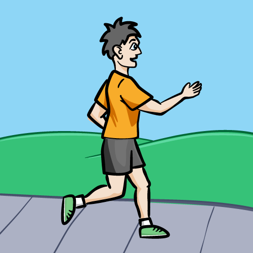
具有激励机制的跑步轨迹记录 App - Runkeeper 已经超过了4000万个用户！本教程会向你展示如何开发一个类似 Runkeeper 的App，你将会学到：
- 使用 Core Location 跟踪你的路线。
- 在地图上不断更新你跑步时的路径。
- 在跑步时告诉你平均速度。
- 通过跑步距离长短，奖励不同的徽章。每个徽章都有银色和金色版本，都代表着你是否有改进的空间。
- 通过获得下一个徽章还需多少距离的方式，来鼓励你跑完剩下的路程。
- 完成之后路径会显示在地图上，不同的颜色表示不同的速度。
你的 App 叫 MoonRunner，徽章包含了太阳系的行星和月亮。
在深入本教程之前，你要先熟悉 Storyboards 和 Core Data，如果你需要复习，请打开链接。
我们也使用了 iOS 10 的一些特性：Measurement 和 MeasurementFormatter，如果想要看更多详细信息，可点击链接查看。
教程分两个部分，第一部分专注于跑步数据的记录以及在地图上绘制有颜色的路径，第二部介绍徽章系统。
入门
下载初始项目，里面包含了完成这个教程所需要的文件和素材。
花几分钟时间看看项目结构。Main.storyboard 包含了项目的 UI。CoreDataStack.swift 放着苹果在 AppDelegate 生成的 Core Data 模板代码。Assets.xcassets 包含了需要的图片和音效。
模型：Runs 和 Locations
MoonRunner 的 Core Data 很简单，只有两个实体：Run 和 Location。
打开 MoonRunner.xcdatamodeld 创建两个实体：Run，Location。Run 属性配置如下：
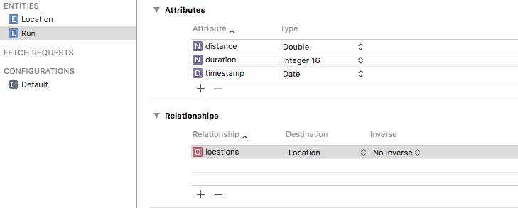
Run 有3个属性：distance，duration 和 timestamp，还有一个连接 Location 实体的单一关系，locations。
注意：在进行下一步之前，你无法设置反向(Inverse)关系，这会出现一个警告，别担心！
现在设置 Location 的属性：
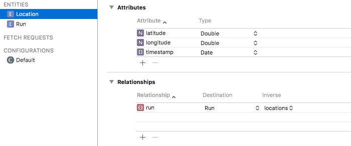
Location 也有3个属性：latitude，longitude，timestamp 和一个单一关系，run。
选择 Run 实体，把 locations 关系的反向(Inverse)属性设置为 run。
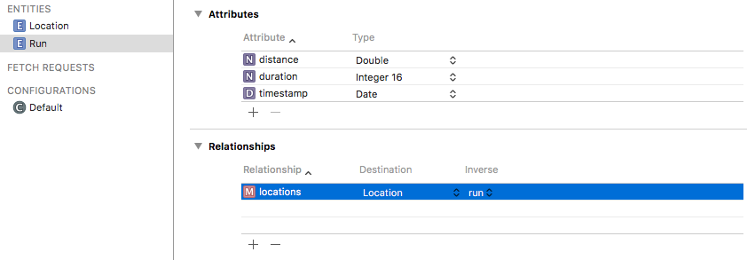
选择 locations 关系，切换到 Data Model Inspector’s Relationship 面板，将 Type 设置为 To Many，在 Ordered 打上勾。
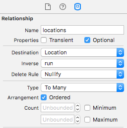
最后在 Data Model Inspector 的 Entity 面板上，确认 Run 和 Location 实体的 Codegen(代码生成) 属性是设置成 Class Definition(类定义)。
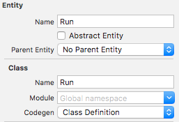
Build 一下你的项目，让 Xcode 生成 Core Data 模型的 Swift 代码。
完成基础的应用程序流程
打开 RunDetailsViewController.swift，在 viewDidLoad() 前面添加下面一行代码：
var run: Run!
在 viewDidLoad() 方法下面添加：
private func configureView() {
}
最后在 viewDidLoad() 里面，在 super.viewDidLoad() 后面添加 configureView()：
configureView()
这些设置完成了导航所需的最低要求。
打开 NewRunViewController.swift，在 viewDidLoad() 前面添加：
private var run: Run?
在 viewDidLoad() 后面添加一些新的方法：
private func startRun() {
launchPromptStackView.isHidden = true
dataStackView.isHidden = false
startButton.isHidden = true
stopButton.isHidden = false
}
private func stopRun() {
launchPromptStackView.isHidden = false
dataStackView.isHidden = true
startButton.isHidden = false
stopButton.isHidden = true
}
停止按钮和 UIStackView 包含的一些跑步用的描述 label 都在 storyboard 隐藏。这些 UI 在"没跑步"和"跑步中"之间进行切换。
在 startTapped() 里面添加 startRun()：
startRun()
在文件的最尾部，关闭括号后面，添加下面的扩展(extension)：
extension NewRunViewController: SegueHandlerType {
enum SegueIdentifier: String {
case details = "RunDetailsViewController"
}
override func prepare(for segue: UIStoryboardSegue, sender: Any?) {
switch segueIdentifier(for: segue) {
case .details:
let destination = segue.destination as! RunDetailsViewController
destination.run = run
}
}
}
苹果的 storyboard 的 segues 是所熟悉的"泛字符串类型"。segues 的标识是一个字符串，所以它没有错误检查。但可以使用 Swift 强大的协议和枚举功能，加上 StoryboardSupport.swift 一点点的特性，就可以摆脱"泛字符串类型"带来的痛苦。
接下来在 stopTapped() 里添加下面代码：
let alertController = UIAlertController(title: "End run?",
message: "Do you wish to end your run?",
preferredStyle: .actionSheet)
alertController.addAction(UIAlertAction(title: "Cancel", style: .cancel))
alertController.addAction(UIAlertAction(title: "Save", style: .default) { _ in
self.stopRun()
self.performSegue(withIdentifier: .details, sender: nil)
})
alertController.addAction(UIAlertAction(title: "Discard", style: .destructive) { _ in
self.stopRun()
_ = self.navigationController?.popToRootViewController(animated: true)
})
present(alertController, animated: true)
当用户按下停止按钮，使用 UIAlertController 让用户决定是否保存、放弃还是继续。
运行 App，点击 New Run 按钮，再点击 Start 按钮，看看 UI 是否变成"正在跑步模式"
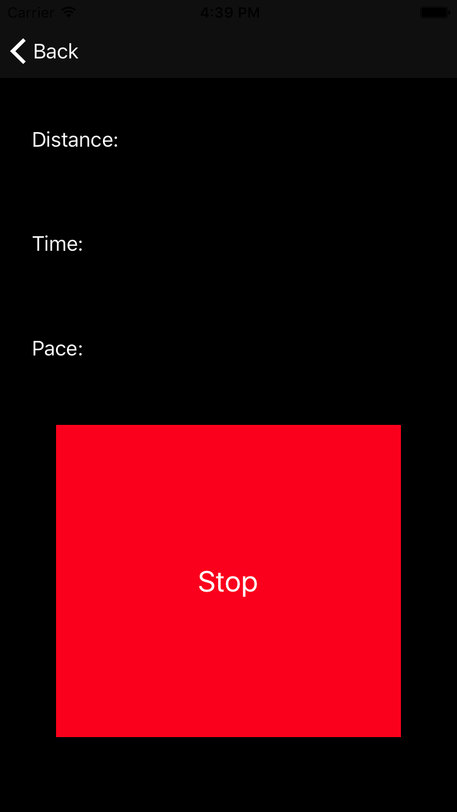
点击 Stop 按钮，再点击 Save 选项，将会进入"细节(Details)"页面。
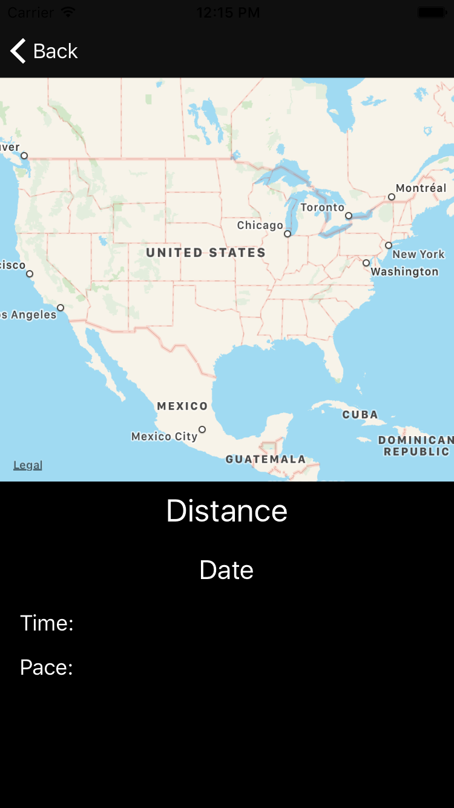
注意：在控制台中，你可能会看到下面的一些错误信息：
MoonRunner[5400:226999] [VKDefault] /BuildRoot/Library/Caches/com.apple.xbs/Sources/VectorKit_Sim/VectorKit-1295.30.5.4.13/src/MDFlyoverAvailability.mm:66: Missing latitude in trigger specification这是正常的，并不代表你程序出问题了。
单位和格式化
iOS 10 引入了新的功能，让测量单位变得更容易使用和显示。用户更关心的是步速(pace)（单位距离的所需时间），也就是速度的倒数（单位时间所走的距离）。所以必须扩展 UnitSpeed 来支持步速的概念。
在项目中添加一个名为 UnitExtensions.swift 的 Swift 文件，在 import 语句后面添加下面代码：
class UnitConverterPace: UnitConverter {
private let coefficient: Double
init(coefficient: Double) {
self.coefficient = coefficient
}
override func baseUnitValue(fromValue value: Double) -> Double {
return reciprocal(value * coefficient)
}
override func value(fromBaseUnitValue baseUnitValue: Double) -> Double {
return reciprocal(baseUnitValue * coefficient)
}
private func reciprocal(_ value: Double) -> Double {
guard value != 0 else { return 0 }
return 1.0 / value
}
}
在创建 UnitSpeed 扩展之前，必须先创建一个可以用于数学计算的 UnitConverter。UnitConverter 子类要求实现 baseUnitValue(fromValue:) 和 value(fromBaseUnitValue:)。
现在可以在文件尾部添加下面代码：
extension UnitSpeed {
class var secondsPerMeter: UnitSpeed {
return UnitSpeed(symbol: "sec/m", converter: UnitConverterPace(coefficient: 1))
}
class var minutesPerKilometer: UnitSpeed {
return UnitSpeed(symbol: "min/km", converter: UnitConverterPace(coefficient: 60.0 / 1000.0))
}
class var minutesPerMile: UnitSpeed {
return UnitSpeed(symbol: "min/mi", converter: UnitConverterPace(coefficient: 60.0 / 1609.34))
}
}
UnitSpeed 是 Foundation 提供的一种单位(Units)。UnitSpeed 单位默认使用的是"米/秒"，而你的扩展可以使用分/公里或者分/英里来表示。
我们需要在 MoonRunner 里用一致的单位表示距离、时间、速度和日期。MeasurementFormatter 和 DateFormatter 可以很好的帮助我们。
新建一个 Swift 文件，命名为 FormatDisplay.swift。在 import 语句后面添加：
struct FormatDisplay {
static func distance(_ distance: Double) -> String {
let distanceMeasurement = Measurement(value: distance, unit: UnitLength.meters)
return FormatDisplay.distance(distanceMeasurement)
}
static func distance(_ distance: Measurement<UnitLength>) -> String {
let formatter = MeasurementFormatter()
return formatter.string(from: distance)
}
static func time(_ seconds: Int) -> String {
let formatter = DateComponentsFormatter()
formatter.allowedUnits = [.hour, .minute, .second]
formatter.unitsStyle = .positional
formatter.zeroFormattingBehavior = .pad
return formatter.string(from: TimeInterval(seconds))!
}
static func pace(distance: Measurement<UnitLength>, seconds: Int, outputUnit: UnitSpeed) -> String {
let formatter = MeasurementFormatter()
formatter.unitOptions = [.providedUnit] // 1
let speedMagnitude = seconds != 0 ? distance.value / Double(seconds) : 0
let speed = Measurement(value: speedMagnitude, unit: UnitSpeed.metersPerSecond)
return formatter.string(from: speed.converted(to: outputUnit))
}
static func date(_ timestamp: Date?) -> String {
guard let timestamp = timestamp as Date? else { return "" }
let formatter = DateFormatter()
formatter.dateStyle = .medium
return formatter.string(from: timestamp)
}
}
这个方法不用多说，简单易懂。在 pace(distance:seconds:outputUnit:) 中需要把 MeasurementFormatter 的 unitOptions 设置为 .providedUnits，防止出现出现本地化的速度单位（如 mph 或 kph）。
开始跑步
是时候开始跑步了，但首先要让 App 知道它在哪里，所以我们要使用 Core Location。应该注意的是，App 只能有一个 CLLocationManager 实例，并且不能被意外的去除。
所以再新建一个 Swift 文件，命名为 LocationManager.swift，用下面的代码替换文件内的代码：
import CoreLocation
class LocationManager {
static let shared = CLLocationManager()
private init() { }
}
在跟踪用户位置之前，还需要进行几项设置。
在 Project Navigator(项目导航) 上面点击 project(项目)。
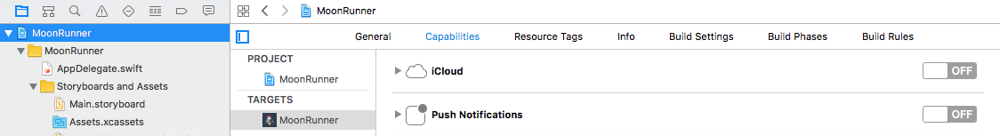
选择 Capabilities(功能) 选项，把 Background Modes 设置成 ON，在 Location updates 上打勾。
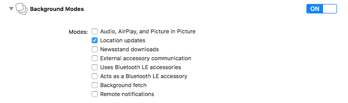
下一步，打开 Info.plist，在 Information Property List 旁边点 +。在菜单列表中选择 Privacy – Location When In Use Usage Description，值设置为 MoonRunner needs access to your location in order to record and track your run!
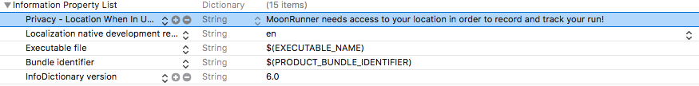
注意：设置这个 Info.plist 的键值很重要，如果没有设置它，用户将无法授权 App 来访问位置服务。
在使用位置信息之前，需要得到用户的批准。打开 AppDelegate.swift，在 application(_:didFinishLaunchingWithOptions:) 里的 return true 前面添加下面代码：
let locationManager = LocationManager.shared
locationManager.requestWhenInUseAuthorization()
打开 NewRunViewController.swift，引入 CoreLocation：
import CoreLocation
然后在 run 属性后面添加：
private let locationManager = LocationManager.shared
private var seconds = 0
private var timer: Timer?
private var distance = Measurement(value: 0, unit: UnitLength.meters)
private var locationList: [CLLocation] = []
一个个解释下：
locationManager是开启和停止位置服务的对象。seconds跑步的持续时间，以秒为单位。timer每秒触发一次的定时器，更新相应的 UI。distance记录跑步的距离。locationList一个数组，用于记录在跑步期间所产生的CLLocation对象。
接下来在 viewDidLoad() 后面添加：
override func viewWillDisappear(_ animated: Bool) {
super.viewWillDisappear(animated)
timer?.invalidate()
locationManager.stopUpdatingLocation()
}
当用户从这个 view 导航去了其他地方，确保能够正确记录和帮助省电，定时器和位置更新都会被停止。
然后再添加下面2个方法：
func eachSecond() {
seconds += 1
updateDisplay()
}
private func updateDisplay() {
let formattedDistance = FormatDisplay.distance(distance)
let formattedTime = FormatDisplay.time(seconds)
let formattedPace = FormatDisplay.pace(distance: distance,
seconds: seconds,
outputUnit: UnitSpeed.minutesPerMile)
distanceLabel.text = "Distance: \(formattedDistance)"
timeLabel.text = "Time: \(formattedTime)"
paceLabel.text = "Pace: \(formattedPace)"
}
eachSecond() 通过 Timer(定时器) 会被每秒执行一次，这个稍后会设置。
updateDisplay() 使用你在 FormatDisplay.swift 构建的格式化功能来更新当前跑步状态的详细信息。
Core Location 通过 CLLocationManagerDelegate 来反馈当前位置的更新。所以在文件尾部加一个 extension：
extension NewRunViewController: CLLocationManagerDelegate {
func locationManager(_ manager: CLLocationManager, didUpdateLocations locations: [CLLocation]) {
for newLocation in locations {
let howRecent = newLocation.timestamp.timeIntervalSinceNow
guard newLocation.horizontalAccuracy < 20 && abs(howRecent) < 10 else { continue }
if let lastLocation = locationList.last {
let delta = newLocation.distance(from: lastLocation)
distance = distance + Measurement(value: delta, unit: UnitLength.meters)
}
locationList.append(newLocation)
}
}
}
Core Location 每次进行位置更新都会调用这个委托方法并返回 CLLocation 对象数值。通常这个数组只包含一个对象，但如果有多个对象，它们是按照时间排序的，最新的位置在最后一个。
CLLocation 包含了纬度、经度、时间戳这些不错的信息。
在读取这些信息之前，要先检查下数据的准确性。当设备记录不准确的时候，用户的实际范围会有20米精度偏差，这些数据最好不要进行保存，只需记录最新最准确的数据即可。
注意：当设备首次记录并开始缩小用户区域范围时所产生的几个点可能是不准确的，所以刚开始时进行检查尤其重要。
如果 CLLocation 通过了检查，则计算它与最近保存的点之间的距离，并累积到当前跑步的距离。distance(from:) 方法十分好用，它涉及了地球曲率的一些令人惊讶的数学计算，并返回单位为米的距离。
最后将 location 对象添加到 locations 数组里。
现在把下面代码添加到 NewRunViewController 类里（不是 extension 里面）。
private func startLocationUpdates() {
locationManager.delegate = self
locationManager.activityType = .fitness
locationManager.distanceFilter = 10
locationManager.startUpdatingLocation()
}
将此类作为 Core Location 的代理，以便接受和处理位置的更新。
activityType 属性是专门针对这样的 App，它可以在用户跑步过程中智能地节省电力，例如用户停下来需要穿过马路的时候。
最后将 distanceFilter 设置为10米，与 activityType 不同，这个属性不影响电池寿命。activityType 是用于读取，而 distanceFilter 则是反馈。
稍后进行测试之后，位置可能会偏离一条直线。更高的 distanceFilter 会减少这些曲折（锯齿，zigging and zagging），从而有一条更精准的线条。但这个值设置的太高的话又会呈现像素化的路径，所以10米是一个很好的值。
现在你终于可以告诉 Core Location 开始更新位置了！
在 startRun() 方法里添加下面几行代码：
seconds = 0
distance = Measurement(value: 0, unit: UnitLength.meters)
locationList.removeAll()
updateDisplay()
timer = Timer.scheduledTimer(withTimeInterval: 1.0, repeats: true) { _ in
self.eachSecond()
}
startLocationUpdates()
在开始跑步时会将它们重置为初始状态，定时器 会每秒触发一次，并开始收集位置更新信息。
保存
用户有时感觉累了会停止跑步，所以你的界面还需要有保存用户跑步记录的地方，用户会不高兴看到自己的努力白费了。
在 NewRunViewController.swift 的 NewRunViewController 类里添加：
private func saveRun() {
let newRun = Run(context: CoreDataStack.context)
newRun.distance = distance.value
newRun.duration = Int16(seconds)
newRun.timestamp = Date()
for location in locationList {
let locationObject = Location(context: CoreDataStack.context)
locationObject.timestamp = location.timestamp
locationObject.latitude = location.coordinate.latitude
locationObject.longitude = location.coordinate.longitude
newRun.addToLocations(locationObject)
}
CoreDataStack.saveContext()
run = newRun
}
如果你在 Swift 3 之前使用了 Core Data，你将会注意到它在 iOS 10 的强大和简单性。创建一个 Run 对象，像给其他 Swift 对象一样进行赋值。然后为你保存的每一个 CLLocation 取出相关值，再创建 Location 对象。最后，把每个 Location 对象通过 Run 自动生成的方法 addToLocations(_:) 添加到 Run 中。
用户停止跑步的时候应该要停止跟踪位置信息，在 stopRun() 里加入这行代码：
locationManager.stopUpdatingLocation()
最后在 stopTapped() 找到 UIAlertAction 标题是 Save 的，在里面添加 self.saveRun()，像这样：
alertController.addAction(UIAlertAction(title: "Save", style: .default) { _ in
self.stopRun()
self.saveRun() // ADD THIS LINE!
self.performSegue(withIdentifier: .details, sender: nil)
})
在模拟器模拟跑
在发布之前，App 都应该要在真实的设备上测试，但每次测试也不需要每次都要出去跑。
运行 App，打开模拟器。在点击 New Run 按钮之前，在模拟器菜单上选择 Debug\Location\City Run。
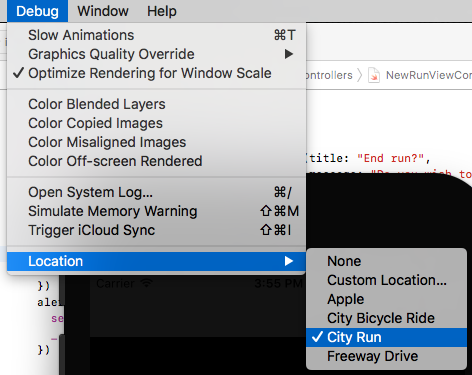
现在点击 New Run，然后按 Start 确认模拟器开始进行训练。
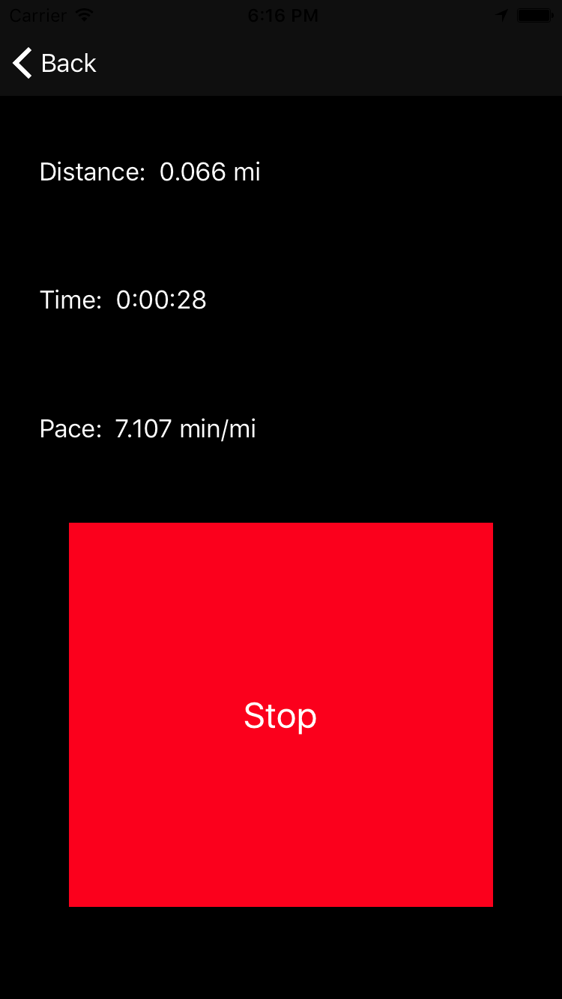
映射出来
经过这么多一系列的工作，是时候向用户展示他们去了哪里，已经他们运动做的怎么样。
打开 RunDetailsViewController.swift，用下面代码替换 configureView()：
private func configureView() {
let distance = Measurement(value: run.distance, unit: UnitLength.meters)
let seconds = Int(run.duration)
let formattedDistance = FormatDisplay.distance(distance)
let formattedDate = FormatDisplay.date(run.timestamp)
let formattedTime = FormatDisplay.time(seconds)
let formattedPace = FormatDisplay.pace(distance: distance,
seconds: seconds,
outputUnit: UnitSpeed.minutesPerMile)
distanceLabel.text = "Distance: \(formattedDistance)"
dateLabel.text = formattedDate
timeLabel.text = "Time: \(formattedTime)"
paceLabel.text = "Pace: \(formattedPace)"
}
这里是格式化跑步时显示的信息。
在地图上渲染跑步路径还需要做一些事情，有三步：
- 设置一个仅显示跑步区域的地图，而不是直接显示整个世界地图。
- 提供一个委托方法来绘制地图覆盖的样式。
- 创建绘制线条的
MKOverlay。
再加上这个方法：
private func mapRegion() -> MKCoordinateRegion? {
guard
let locations = run.locations,
locations.count > 0
else {
return nil
}
let latitudes = locations.map { location -> Double in
let location = location as! Location
return location.latitude
}
let longitudes = locations.map { location -> Double in
let location = location as! Location
return location.longitude
}
let maxLat = latitudes.max()!
let minLat = latitudes.min()!
let maxLong = longitudes.max()!
let minLong = longitudes.min()!
let center = CLLocationCoordinate2D(latitude: (minLat + maxLat) / 2,
longitude: (minLong + maxLong) / 2)
let span = MKCoordinateSpan(latitudeDelta: (maxLat - minLat) * 1.3,
longitudeDelta: (maxLong - minLong) * 1.3)
return MKCoordinateRegion(center: center, span: span)
}
MKCoordinateRegion 表示地图显示的区域。你通过一个中心点和水平、垂直范围的跨度来定义它。我们还需要在四周加点填充，让地图视野大一些。
在文件的最尾部，关闭括号后面，添加下面一个 extension：
extension RunDetailsViewController: MKMapViewDelegate {
func mapView(_ mapView: MKMapView, rendererFor overlay: MKOverlay) -> MKOverlayRenderer {
guard let polyline = overlay as? MKPolyline else {
return MKOverlayRenderer(overlay: overlay)
}
let renderer = MKPolylineRenderer(polyline: polyline)
renderer.strokeColor = .black
renderer.lineWidth = 3
return renderer
}
}
当 MapKit 需要显示叠加层时，都会执行这个委托方法进行渲染。如果覆盖层是 MKPolyine(线段的集合)，则返回一条黑色的 MKPolylineRenderer。稍后你会让这条线变得更加丰富多彩。
最后你要创建一个覆盖层，将下面方法添加到 RunDetailsViewController 类里面（不是 extension 里面）：
private func polyLine() -> MKPolyline {
guard let locations = run.locations else {
return MKPolyline()
}
let coords: [CLLocationCoordinate2D] = locations.map { location in
let location = location as! Location
return CLLocationCoordinate2D(latitude: location.latitude, longitude: location.longitude)
}
return MKPolyline(coordinates: coords, count: coords.count)
}
按照 MKPolyline 的要求，需要把每个存储的 location 对象转换成 CLLocationCoordinate2D。
是把这些整合在一起了，添加下面方法：
private func loadMap() {
guard
let locations = run.locations,
locations.count > 0,
let region = mapRegion()
else {
let alert = UIAlertController(title: "Error",
message: "Sorry, this run has no locations saved",
preferredStyle: .alert)
alert.addAction(UIAlertAction(title: "OK", style: .cancel))
present(alert, animated: true)
return
}
mapView.setRegion(region, animated: true)
mapView.add(polyLine())
}
这里要先确认有东西可画，然后再设置地图区域和添加覆盖层。
现在在 configureView() 里添加：
loadMap()
运行你的App，当你跑完步保存之后就会在地图上看到你跑步的路径。
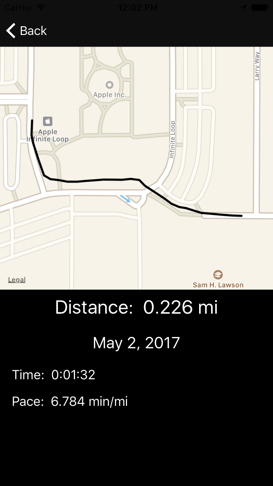
在控制器中你可能会看到类似下面的一条或者多条错误：
ERROR /BuildRoot/Library/Caches/com.apple.xbs/Sources/VectorKit_Sim/VectorKit-1230.34.9.30.27/GeoGL/GeoGL/GLCoreContext.cpp 1763: InfoLog SolidRibbonShader: ERROR /BuildRoot/Library/Caches/com.apple.xbs/Sources/VectorKit_Sim/VectorKit-1230.34.9.30.27/GeoGL/GeoGL/GLCoreContext.cpp 1764: WARNING: Output of vertex shader 'v_gradient' not read by fragment shader /BuildRoot/Library/Caches/com.apple.xbs/Sources/VectorKit_Sim/VectorKit-1295.30.5.4.13/src/MDFlyoverAvailability.mm:66: Missing latitude in trigger specification在模拟器中这是正常的，这些信息是来自 MapKit，但不代表你的代码有问题。
颜色代表的意思
App 现在已经非常棒了，但如果在地图上使用其他颜色表现跑步速度会更好。
现在新建一个 Cocoa Touch Class 文件，命名为 MulticolorPolyline，使其成为 MKPolyline 的子类。
打开 MulticolorPolyline.swift 并引用 MapKit：
import MapKit
在类里添加颜色属性：
var color = UIColor.black
没错，就是这么简单！:] 但接下来可能会有点复杂，打开 RunDetailsViewController.swift 并添加下面方法：
private func segmentColor(speed: Double, midSpeed: Double, slowestSpeed: Double, fastestSpeed: Double) -> UIColor {
enum BaseColors {
static let r_red: CGFloat = 1
static let r_green: CGFloat = 20 / 255
static let r_blue: CGFloat = 44 / 255
static let y_red: CGFloat = 1
static let y_green: CGFloat = 215 / 255
static let y_blue: CGFloat = 0
static let g_red: CGFloat = 0
static let g_green: CGFloat = 146 / 255
static let g_blue: CGFloat = 78 / 255
}
let red, green, blue: CGFloat
if speed < midSpeed {
let ratio = CGFloat((speed - slowestSpeed) / (midSpeed - slowestSpeed))
red = BaseColors.r_red + ratio * (BaseColors.y_red - BaseColors.r_red)
green = BaseColors.r_green + ratio * (BaseColors.y_green - BaseColors.r_green)
blue = BaseColors.r_blue + ratio * (BaseColors.y_blue - BaseColors.r_blue)
} else {
let ratio = CGFloat((speed - midSpeed) / (fastestSpeed - midSpeed))
red = BaseColors.y_red + ratio * (BaseColors.g_red - BaseColors.y_red)
green = BaseColors.y_green + ratio * (BaseColors.g_green - BaseColors.y_green)
blue = BaseColors.y_blue + ratio * (BaseColors.g_blue - BaseColors.y_blue)
}
return UIColor(red: red, green: green, blue: blue, alpha: 1)
}
这里你定义了红色，黄色，绿色的基础色，然后根据速度慢快的范围创建混合色。
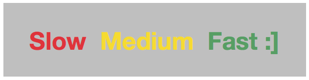
用下面的代码替换 polyLine()：
private func polyLine() -> [MulticolorPolyline] {
// 1
let locations = run.locations?.array as! [Location]
var coordinates: [(CLLocation, CLLocation)] = []
var speeds: [Double] = []
var minSpeed = Double.greatestFiniteMagnitude
var maxSpeed = 0.0
// 2
for (first, second) in zip(locations, locations.dropFirst()) {
let start = CLLocation(latitude: first.latitude, longitude: first.longitude)
let end = CLLocation(latitude: second.latitude, longitude: second.longitude)
coordinates.append((start, end))
//3
let distance = end.distance(from: start)
let time = second.timestamp!.timeIntervalSince(first.timestamp! as Date)
let speed = time > 0 ? distance / time : 0
speeds.append(speed)
minSpeed = min(minSpeed, speed)
maxSpeed = max(maxSpeed, speed)
}
//4
let midSpeed = speeds.reduce(0, +) / Double(speeds.count)
//5
var segments: [MulticolorPolyline] = []
for ((start, end), speed) in zip(coordinates, speeds) {
let coords = [start.coordinate, end.coordinate]
let segment = MulticolorPolyline(coordinates: coords, count: 2)
segment.color = segmentColor(speed: speed,
midSpeed: midSpeed,
slowestSpeed: minSpeed,
fastestSpeed: maxSpeed)
segments.append(segment)
}
return segments
}
我们用了一些新代码：
- 折线(polyline)由一个个线段(segment)组成，通过每个线段的端点(endpoint)标记。同时存储每个线段和线段的速度。
- 将每个端点转换成
CLLocation并成对保存。 - 计算线段的速度。需要注意的是 Core Location 有时会返回多个相同的时间戳，所以要防止除以 0 的情况。最后保存速度，并更新最小和最大速度。
- 计算跑步的平均速度。
- 用上面准备好的坐标对，创建
MulticolorPolyline并将其设置颜色。
你现在会看到 loadMap() 的 mapView.add(polyLine()) 有一个错误。用下面的代码替换它：
mapView.addOverlays(polyLine())
在 MKMapViewDelegate extension 用下面代码替换 mapView(_:rendererFor:)：
func mapView(_ mapView: MKMapView, rendererFor overlay: MKOverlay) -> MKOverlayRenderer {
guard let polyline = overlay as? MulticolorPolyline else {
return MKOverlayRenderer(overlay: overlay)
}
let renderer = MKPolylineRenderer(polyline: polyline)
renderer.strokeColor = polyline.color
renderer.lineWidth = 3
return renderer
}
这和之前的代码非常相似，现在每一个覆盖层都是 MulticolorPolyline，并加入了颜色来渲染线段。
运行 App！让模拟器快慢的跑步，然后看看那些带颜色的路径出现在地图上。
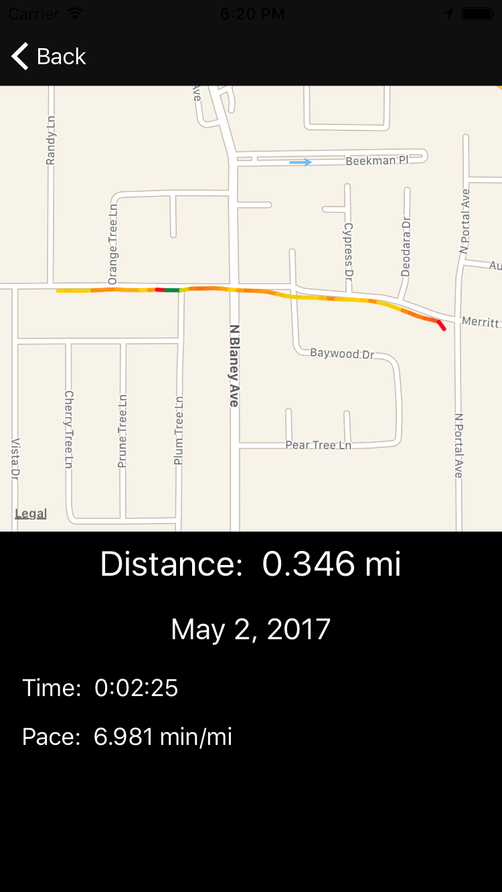
怎么进行面包屑布局？
跑步结束后的地图表现很棒，但怎样可以一边跑步一边把效果映射到地图上呢？
使用 storyboard 的 UIStackView 可以轻松实现。
首先，打开 NewRunViewController.swift 并引入 MapKit：
import MapKit
打开 Main.storyboard 找到 New Run View Controller Scene，确保 Document Outline 是可见的，如果没看见，就点击下图的红色区域按钮：
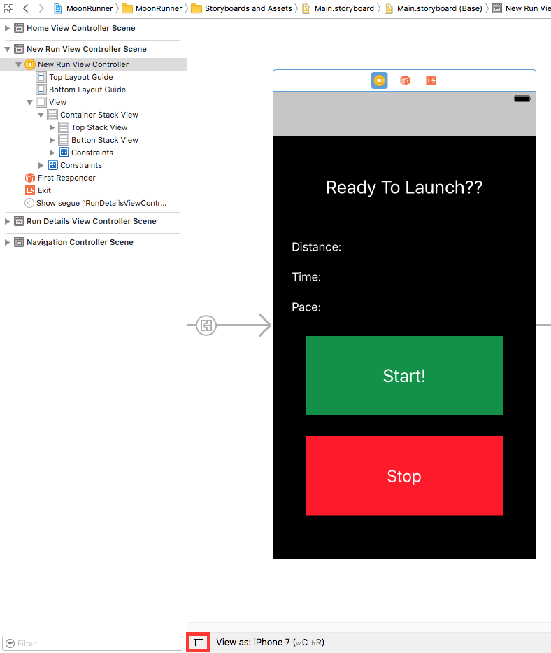
拖拽一个 UIView 到 Document Outline，放在 Top Stack View 和 Button Stack View 中间。确保是在它们的中间，而不是在它们其中一个的里面。双击重命名叫 Map Container View。
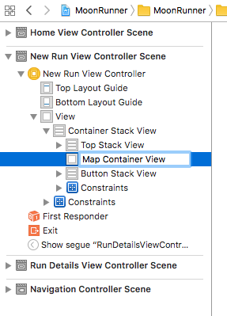
在 Attributes Inspector 的 Drawing，勾选 Hidden。
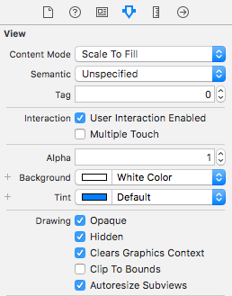
在 Document Outline，选中 Map Container View 按住 Control 并按左键拖拽到 Top Stack View，再弹出的选择框中选择 Equal Widths。
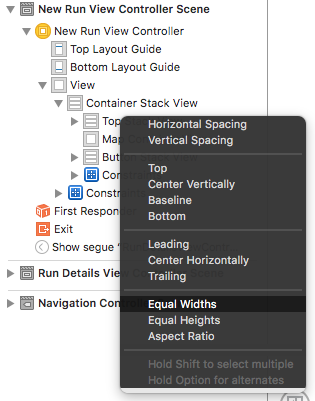
拖拽一个 MKMapView 到 Map Container View 里。点击 Add New Constraints 按钮（又名：战斗机按钮），把 4 个约束都设置为 0，同时确保 Constrain to margins 没有被打勾，然后点击 Add 4 Constraints。
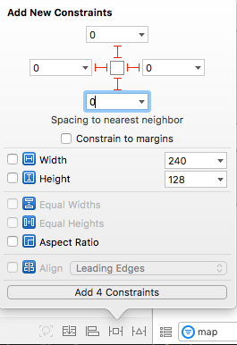
在 Document Outline 选中 Map View，打开 Size Inspector (View\Utilities\Show Size Inspector)，双击 Bottom Space to: Superview。
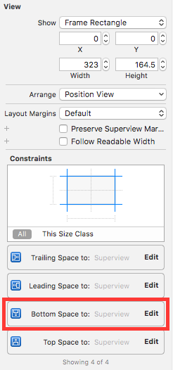
将 priority(优先级) 设置为 High (750)。
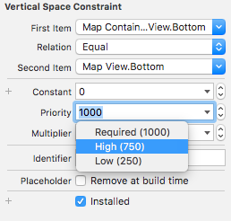
在 Document Outline，选中 Map View 按住 Control 并按左键拖拽到 New Run View Controller 并选择 delegate。
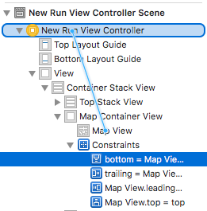
打开 Assistant Editor，确保显示的是 NewRunViewController.swift。选中 Map View 按住 Control 并按左键拖拽到 swift 文件，创建一个名为 mapView 的 outlet。同理选中 Map Container View 并创建一个名为 mapContainerView 的 outlet。
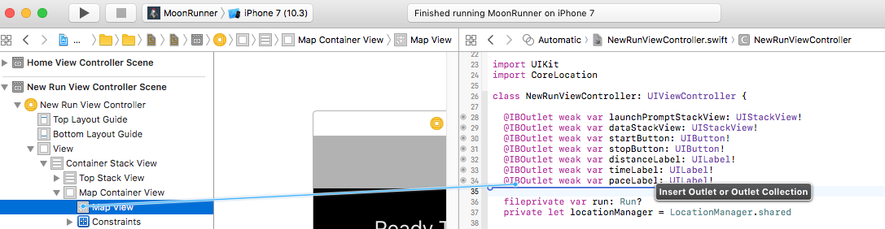
关闭 Assistant Editor，打开 NewRunViewController.swift。
在 startRun() 里添加下面代码：
mapContainerView.isHidden = false
mapView.removeOverlays(mapView.overlays)
在 stopRun() 添加下面代码：
mapContainerView.isHidden = true
现在需要一个 MKMapViewDelegate 来提供路径的渲染。在文件底部添加 extension 的实现：
extension NewRunViewController: MKMapViewDelegate {
func mapView(_ mapView: MKMapView, rendererFor overlay: MKOverlay) -> MKOverlayRenderer {
guard let polyline = overlay as? MKPolyline else {
return MKOverlayRenderer(overlay: overlay)
}
let renderer = MKPolylineRenderer(polyline: polyline)
renderer.strokeColor = .blue
renderer.lineWidth = 3
return renderer
}
}
这里像 RunDetailsViewController.swift 所写的委托代码，只不过这里的路径是蓝色的。
最后只需要在跑步的过程中，时刻更新用户所在的地图区域，并在相应的地方添加线段。在 locationManager(_:didUpdateLocations:) 里的 distance = distance + Measurement(value: delta, unit: UnitLength.meters) 后面，添加下面代码：
let coordinates = [lastLocation.coordinate, newLocation.coordinate]
mapView.add(MKPolyline(coordinates: coordinates, count: 2))
let region = MKCoordinateRegionMakeWithDistance(newLocation.coordinate, 500, 500)
mapView.setRegion(region, animated: true)
运行 App，按 New Run。你会看到地图在根据你的活动实时更新。
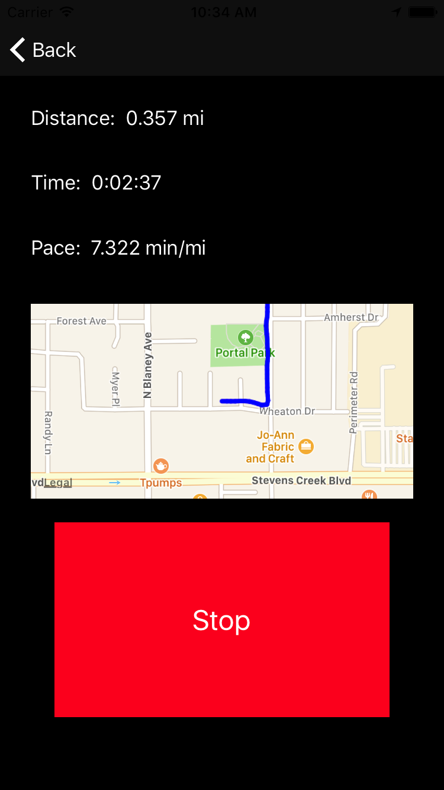
何去何从？
下载到目前为止的项目代码。
你可能注意到不管你所在的区域是否习惯以米或者千米为单位，速度总是以"min/mi"显示。所以请尝试找到一种方法，根据所在的区域（国家）使用习惯的不同，通过 FormatDisplay.pace(distance:seconds:outputUnit:) 方法，动态切换 .minutesPerMile， .minutesPerKilometer 单位。
继续第二部分的内容，将向你展示如何打造一个徽章成就系统。
我一如既往的期待着你的意见和问题！:]